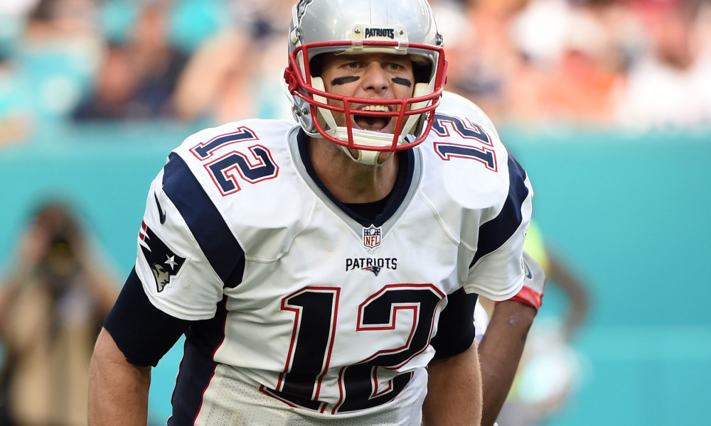
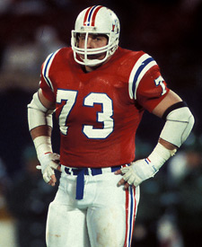
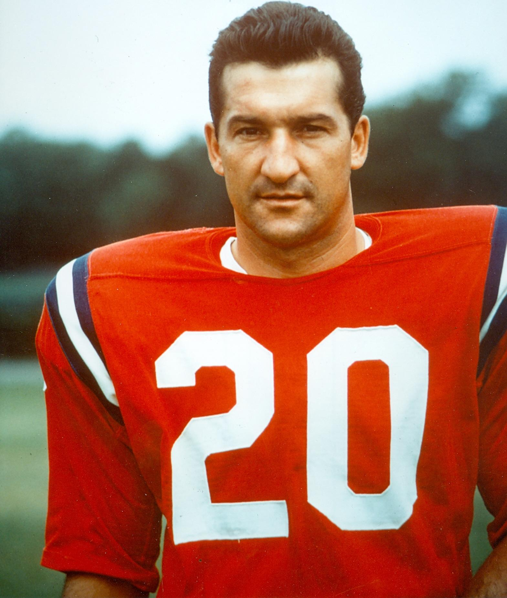

Thomas Edward Patrick Brady Jr. (born August 3, 1977)
He is one of only two players to win five Super Bowls. The only quarterback to win five, and the only player to win them all playing for one team.
John Allen Hannah (born April 4, 1951)
He played his entire career with the Patriots from 1973 through the 1985 Super Bowl season and was dubbed "The Greatest Offensive Lineman of All Time" by Sports Illustrated
Gino Cappelletti (born March 26, 1934)
He is the “original Patriot” and perhaps the most recognized figure in franchise history. A versatile player, Cappelletti played wide receiver and kicker for the Patriots from 1960-70